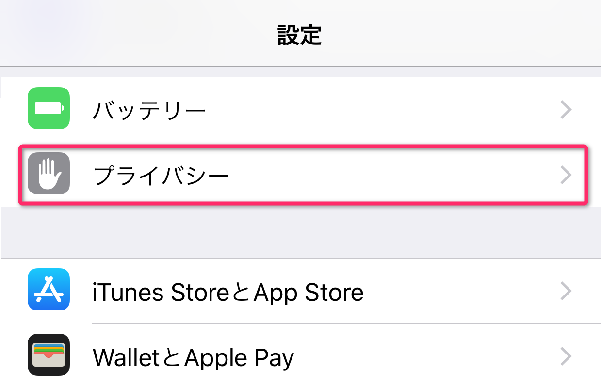
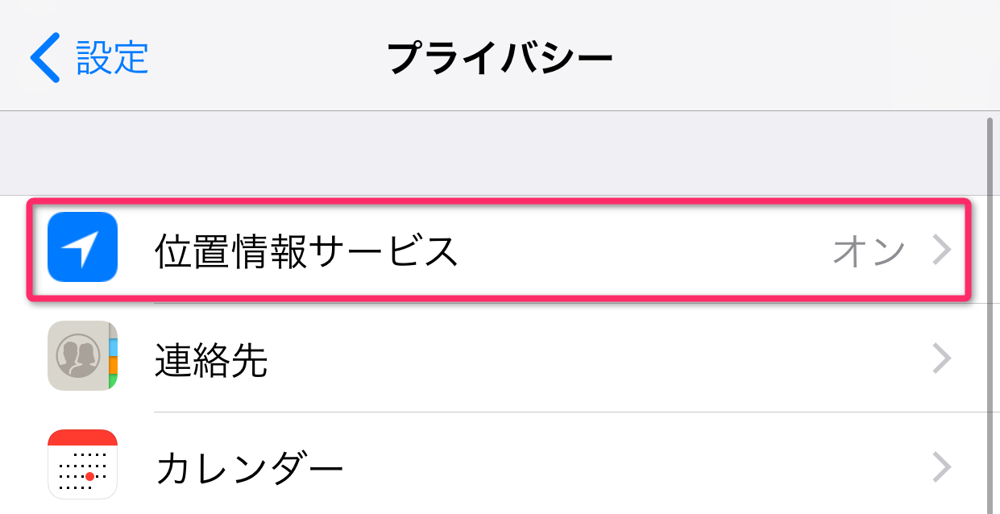
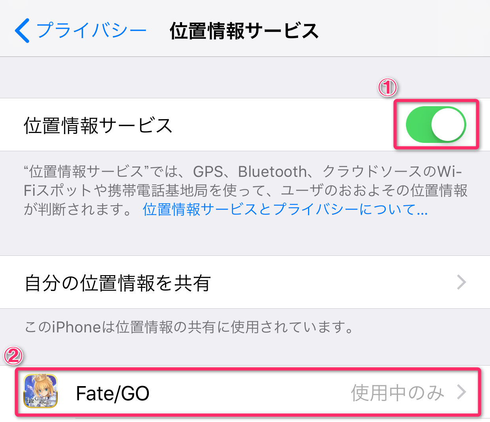
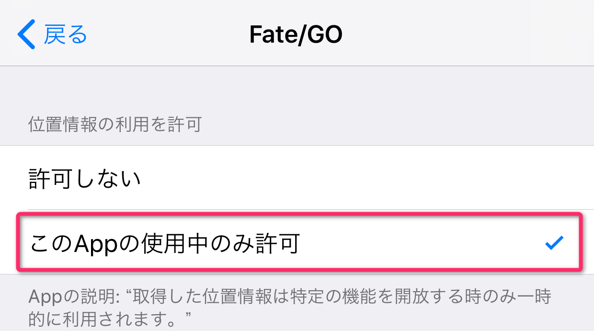
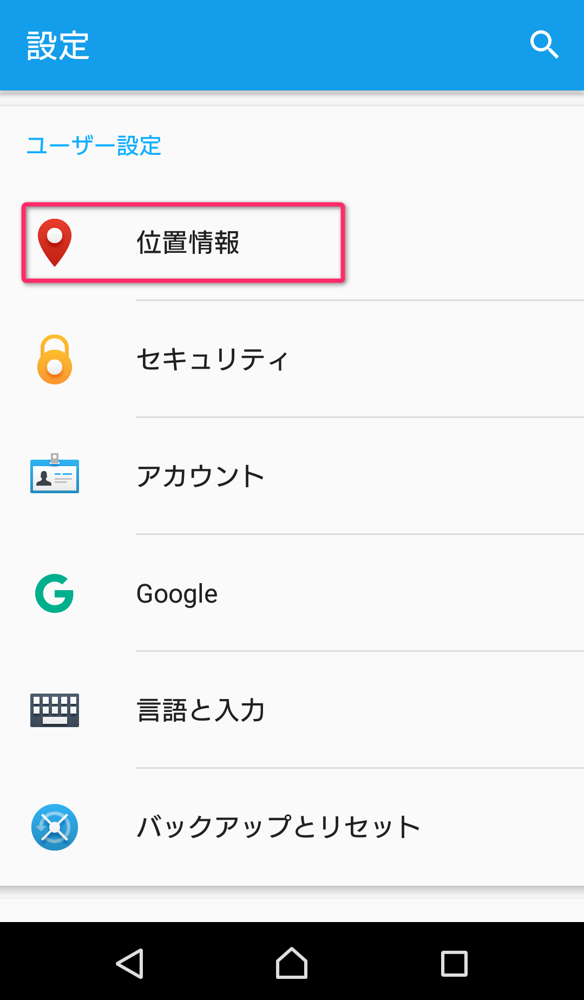
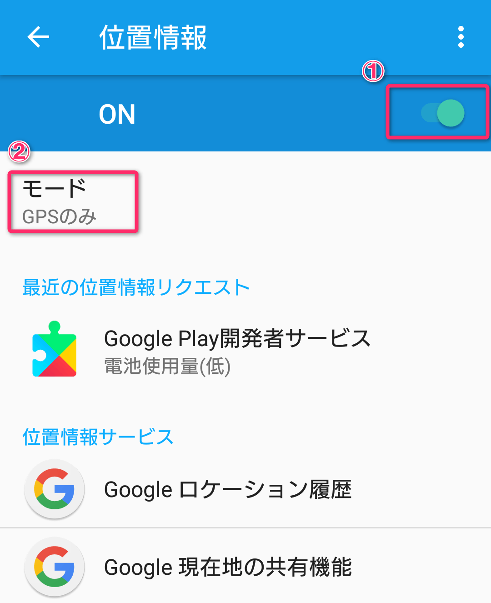
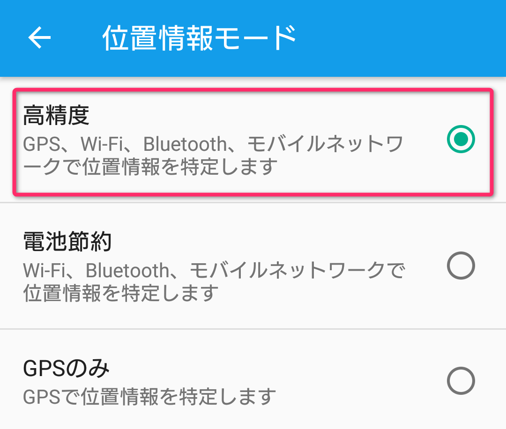
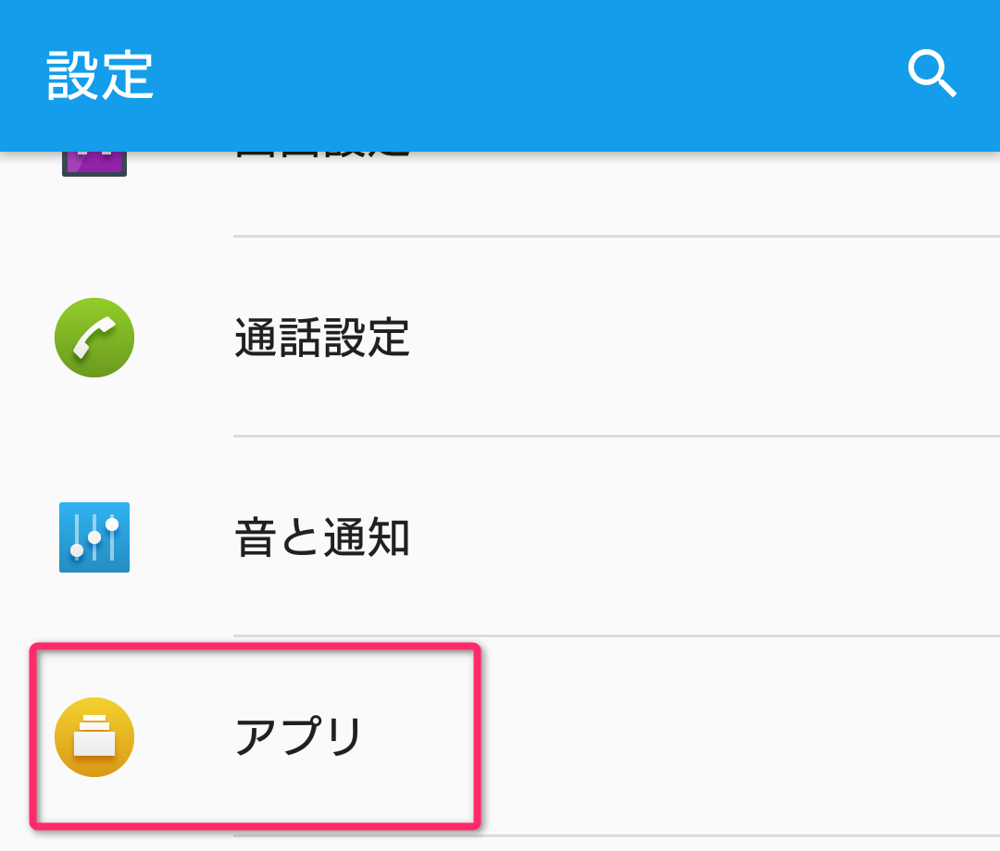
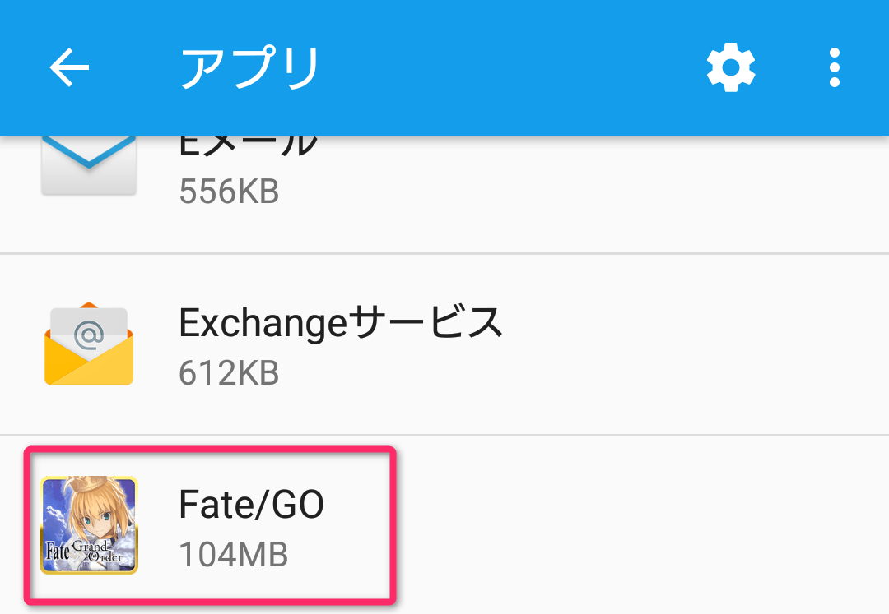
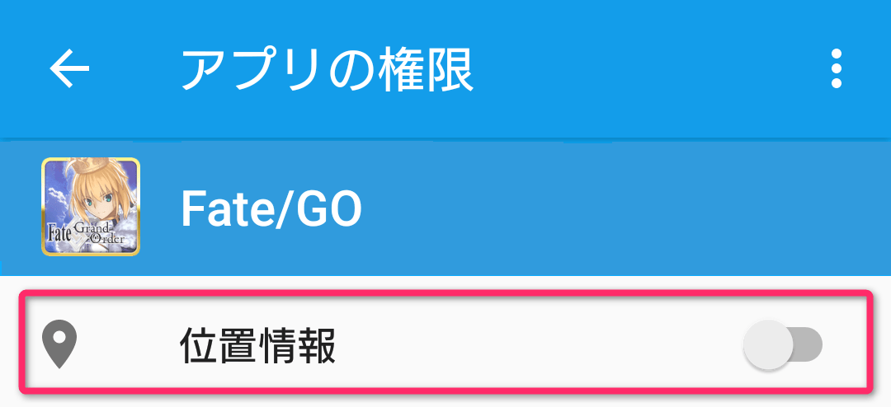

- 10/11
- 【重要】關於讓裝置位置資訊的功能有效的方法
非常感謝您的使用。
這裡是「Fate/Grand Order」營運團隊。
【10/11 18:00追記】
由於10月14日(五) 23:00前位置檢查功能為無效，關於iOS在應用程式一覧不會顯示「Fate/GO」。
請等位置檢查功能變為有效之後再度嘗試。
「Fate/Grand Order」（Ver.1.29.0以後）使用位置情報的話可享受追加的要素。
※本功能在管理室(ターミナル)畫面點擊「位置檢查(エリアチェック)」，只限顯示期間才有效。
關於「位置檢查」的使用方法，請參照「劇場來場者特典」的領取方法。
※為了取得正確的位置情報，位置情報取得時推薦使用行動網路。
※請注意未搭載GPS的裝置，只靠Wi-Fi網路連接難以保證裝置的動作。
【位置情報的設定方法】
◆iOS的設定方法

1.於主畫面點擊「設定」。

2.從設定中點擊「隱私(プライバシー)」。

3.從隱私中點擊「位置情報服務(位置情報サービス)」。

4.位置情報服務若為OFF情況請變更為ON
調為ON確認後，從在同畫面內顯示的程式一覧點擊「Fate/GO」。

5.點擊「只允許此App的使用中」，讓右方打勾。
◆Android的設定方法
※根據OS的版本和機種，選單的表現、操作方法會有些微差異。會有不明白的情況，
請向各裝置的電信業者、製造商詢問。

1.打開設定畫面開點擊「位置情報」。

2.確認位置資訊為有效，點擊「模式(モード)」。

3.請點擊任意的模式。
※高精確度以外的情況，會有GPS無法良好檢測的情況。

4.返回設定畫面點擊「應用程式(アプリ)」。

5.從程式一覧中點擊「Fate/GO」。

6.打開「程式情報」畫面，點擊「權限許可」。

7.點擊位置情報使之有效。
今後也請多多指教「Fate/Grand Order」。